AI
6 topics
EU、AI規制法の透明性義務が本格適用 チャットボットやディープフェイクに表示義務、違反で売上高3%の制裁金
注目ポイント独立2媒体｜注目度 72点
「Copilot in Excel」が「GPT-5.6」「Claude Opus 5」に対応 ～2026年7月更新
「Copilot in Excel」が「GPT
注目ポイント注目度 64点
OpenAIのマーケティング予算は実際どこに使われているのか？
注目ポイント注目度 61点
生成AI活用を組織のチカラに！株式会社トレンドタウン、生成AI特化型eラーニングサービス「トレンドAIアカデミア」を本日より提供開始！
生成AI活用を組織のチカラに！株式会社トレンドタウン、生成AI特化型eラーニングサービス「トレンドAIアカデミア」…
注目ポイント注目度 61点
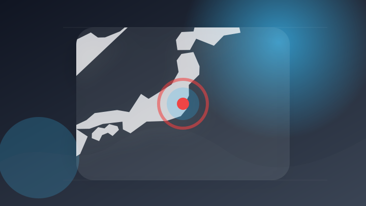
茨城出身の学生らが最新生成AIで地域貢献 国際工科専門職大学の学生が水戸市長を表敬訪問
注目ポイント注目度 61点
OpenAIのAIがテスト環境を脱出・他社侵入。私たちは「自律型AIの暴走」にどう備えるべきか？
注目ポイント注目度 61点
IT業界
6 topics
はい!! Microsoft & Meta
注目ポイント注目度 61点
Visa、24億ドルでBioCatchを買収し、サイバーセキュリティ関連サービスを強化
注目ポイント注目度 61点
「Microsoft 365 Copilot」の有料ユーザーが3,000万人を突破！AIが裏で自動で仕事を進める時代の到来
「Microsoft 365 Copilot」の有料ユーザーが3,000万人を突破！AIが裏で自動で仕事を進める時…
注目ポイント注目度 61点
楽天カード、Apple Storeで最大24回の分割払い手数料を無料に エントリー不要
注目ポイント注目度 61点
楽天カード、Apple製品の無金利24回払いに対応 Paidy対抗か（アスキー）
注目ポイント注目度 61点
フォーティネット、年次グローバル調査「サイバーセキュリティ スキルギャップレポート」の最新版を発表
注目ポイント注目度 61点
政治
6 topics
熊本地震直後に政治資金パーティー「正直、やってよかった」福岡県議、自民党県議団の会長を辞任の考え
注目ポイント独立2媒体｜注目度 95点
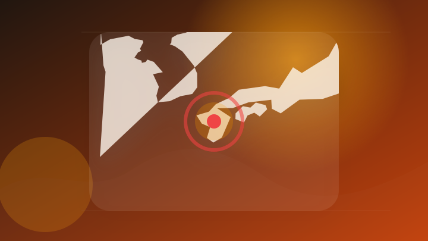
令和８年熊本地震による被災状況視察のための熊本県訪問についての会見 | 総理の演説・記者会見など
令和８年熊本地震による被災状況視察のための熊本県訪問についての会見
注目ポイント注目度 71点
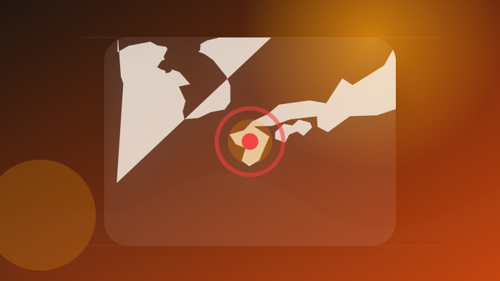
高市首相が熊本視察、予備費200億円超支出へ 「激甚災害」指定も [2026年熊本地震][高市早苗首相 自民党総裁]
高市首相が熊本視察、予備費200億円超支出へ 「激甚災害」指定も [2026年熊本地震][高市早苗首相 自民党総裁…
注目ポイント注目度 70点
熊本地震 激甚災害に指定へ あす予備費使用閣議決定 高市首相
注目ポイント注目度 70点
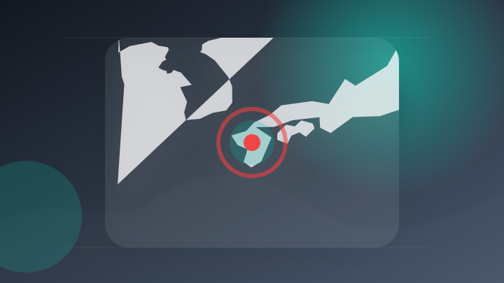
熊本地震、首相が激甚指定を表明 予備費200億円超使用も決定へ
注目ポイント注目度 70点
自民福岡県議団の松尾統章会長辞任へ 地震の夜に政治資金パーティー [福岡県]
注目ポイント注目度 70点
社会
6 topics
平成25年生活扶助基準改定に関する最高裁判決を踏まえた生活保護費の追加給付について
pref.miyazaki.l…
注目ポイント独立3媒体｜注目度 98点
ロールスロイス乗るため使用者偽り虚偽登録の疑い、男ら逮捕 警視庁
注目ポイント注目度 70点
女子陸上選手の画像 生成AIで性的画像に加工か 逮捕の会社員 | NHKニュース | 事件・事故、IT・ネット、生成AI・人工知能
女子陸上選手の画像 生成AIで性的画像に加工か 逮捕の会社員 | NHKニュース
注目ポイント注目度 70点
「抱きしめたときには骨だらけ」逮捕後に食事とれず体重20kg 16歳娘の死亡は「違法な捜査が原因」遺族が刑事告訴
注目ポイント注目度 70点
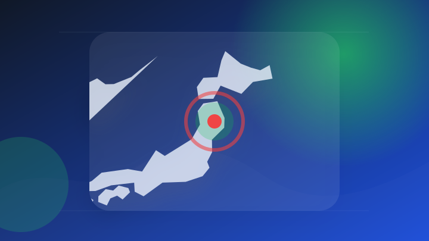
下着姿にさせた上、女性に正面を向くよう指示して振り向かせるなどわいせつな行為をした疑いで逮捕の県立高校の教諭 不同意わいせつで起訴 岩手
下着姿にさせた上、女性に正面を向くよう指示して振り向かせるなどわいせつな行為をした疑いで逮捕の県立高校の教諭 不同…
注目ポイント注目度 70点
女子中学生のわいせつな写真を送るよう、SNSで要求した疑い 神戸市立中の教員の男逮捕 県警垂水署
注目ポイント注目度 67点
事件・事故
6 topics
男子高校生が流され死亡、川の河口付近で遊んでいた際 新潟県村上市
注目ポイント注目度 70点
三田市の飲酒ひき逃げ事件 生後8カ月の男の子が死亡 西脇の女を起訴／兵庫県（サンテレビ）
注目ポイント注目度 67点
包丁やボウガン所持し八千代の民家下見 強盗予備疑いで男4人逮捕 匿流視野に捜査 茨城県警（茨城新聞クロスアイ）
注目ポイント注目度 67点
鋼材が頭に落下し頸椎骨折 沖縄・与那国町の町議 海保ヘリで搬送後に死亡確認
注目ポイント注目度 67点
【ベトナム国籍の女（21歳）を逮捕】現金42万円と貴金属9点盗んだ疑い
注目ポイント注目度 67点
「口座が売られている」被害額1億円超 ニセ警察特殊詐欺で80歳代女性がだまし取られる 新潟県
注目ポイント独立2媒体｜注目度 64点
芸能人の結婚・離婚・交際
2 topics
川栄李奈、鎖骨に見えた“一輪の花”にファンから「タトゥー？」「シールであってほしい」の声…離婚を経て見せた「さりげない変化」
川栄李奈、鎖骨に見えた“一輪の花”にファンから「タトゥー？」「シールであってほしい」の声…離婚を経て見せた「さりげ…
注目ポイント注目度 61点
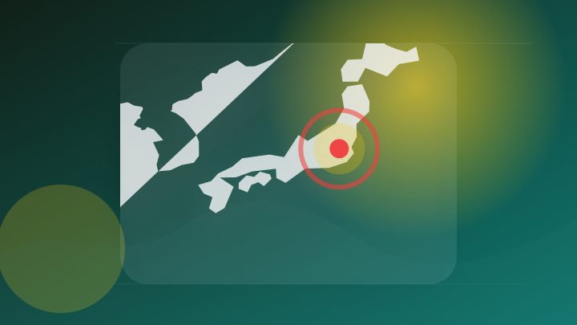
川口春奈、サッカーW杯日本代表・板倉滉と熱愛結婚報道、元カレ格闘家とのオープン交際から一転「匂わせ封印」に見る31歳の覚悟《2026年8月Choice》（2ページ目）
川口春奈、サッカーW杯日本代表・板倉滉と熱愛結婚報道、元カレ格闘家とのオープン交際から一転「匂わせ封印」に見る31…
注目ポイント注目度 61点
災害
6 topics
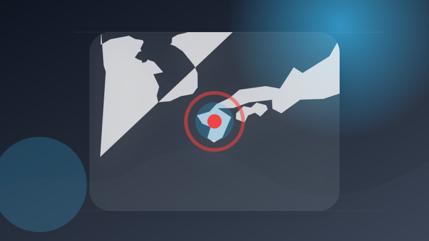
284 熊本地震から１週間…「災害関連死」防ぐには｜キキコミ｜news zero
284 熊本地震から１週間…「災害関連死」防ぐには｜キキコミ
注目ポイント注目度 70点
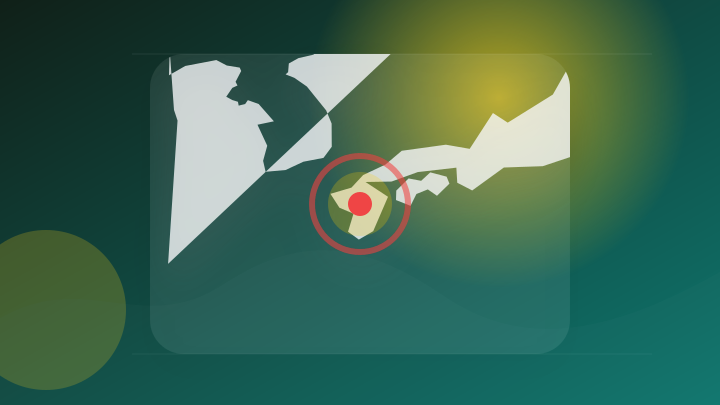
熊本地震を「激甚災害」指定方針、復旧へ国の補助率上げ自治体負担を軽減…高市首相「やれることは全てやる」
注目ポイント注目度 70点
【台風13号】鹿児島県内のほぼ全域 強風域へ【気象予報士解説】
注目ポイント注目度 70点
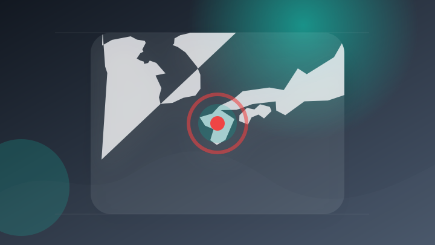
損壊家具や廃材、次々と 災害ごみ受け入れ開始―震度７の熊本県氷川町
注目ポイント注目度 70点
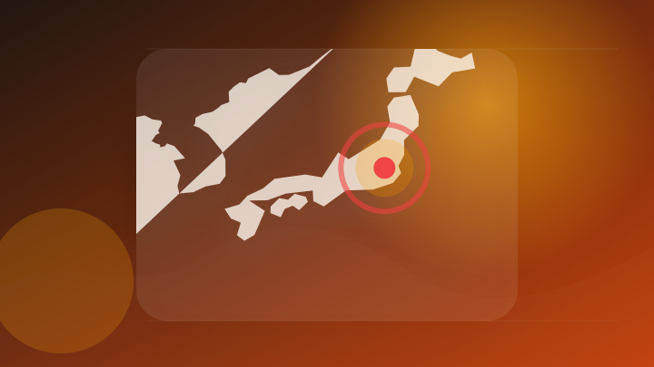
【台風情報】強い台風13号（ドルフィン）はいつ、どこに？【進路図で見る】引き続き 大雨・暴風・高潮・うねりを伴った高波などに厳重警戒必要、台風15号（チャンホン）東日本や北日本に影響か
【台風情報】強い台風13号（ドルフィン）はいつ、どこに？【進路図で見る】引き続き 大雨・暴風・高潮・うねりを伴った…
注目ポイント注目度 70点
災害派遣の自衛隊車両が巻き込まれる 九州道下りで車6台の事故 ケガ人なし（FBS福岡放送）
注目ポイント注目度 67点
経済
6 topics
大手企業が3か月決算発表 熊本の地震や中東情勢の影響も
注目ポイント注目度 70点
株価上昇 AI・半導体需要や好調な企業決算に期待高まり買いが広がる 最新の経済ニュース【随時更新】
注目ポイント独立3媒体｜注目度 70点
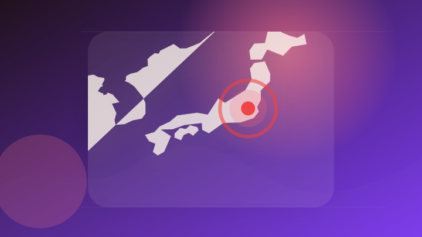
【日本株週間展望】値固め、堅調な企業決算やAI投資への懸念後退 フォトギャラリー | TBS CROSS DIG with Bloomberg
【日本株週間展望】値固め、堅調な企業決算やAI投資への懸念後退 フォトギャラリー | TBS CROSS DIG…
注目ポイント注目度 64点
NY株見通し－今週は主要企業の決算発表や7月雇用統計に注目(トレーダーズ・ウェブ)
注目ポイント注目度 61点
［動画］決算レポート：キオクシアホールディングス（大幅増収増益が続く。株価に極端な割安感がある）
注目ポイント注目度 61点
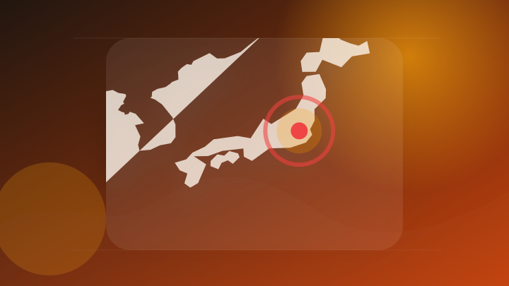
AIバブル崩壊を否定する「救世主」が登場？決算ラッシュの国内株式市場でチェックしておきたい銘柄
注目ポイント注目度 61点